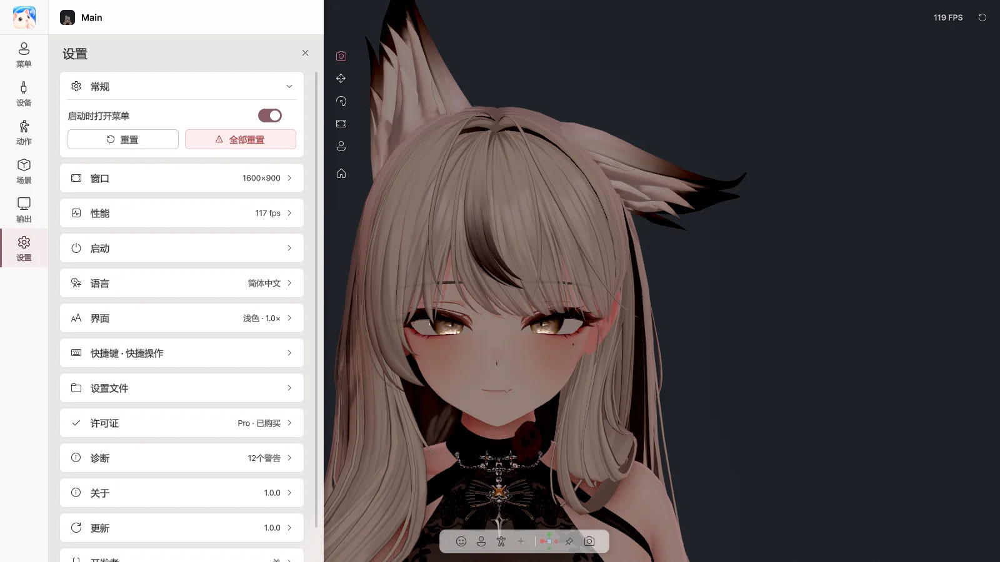
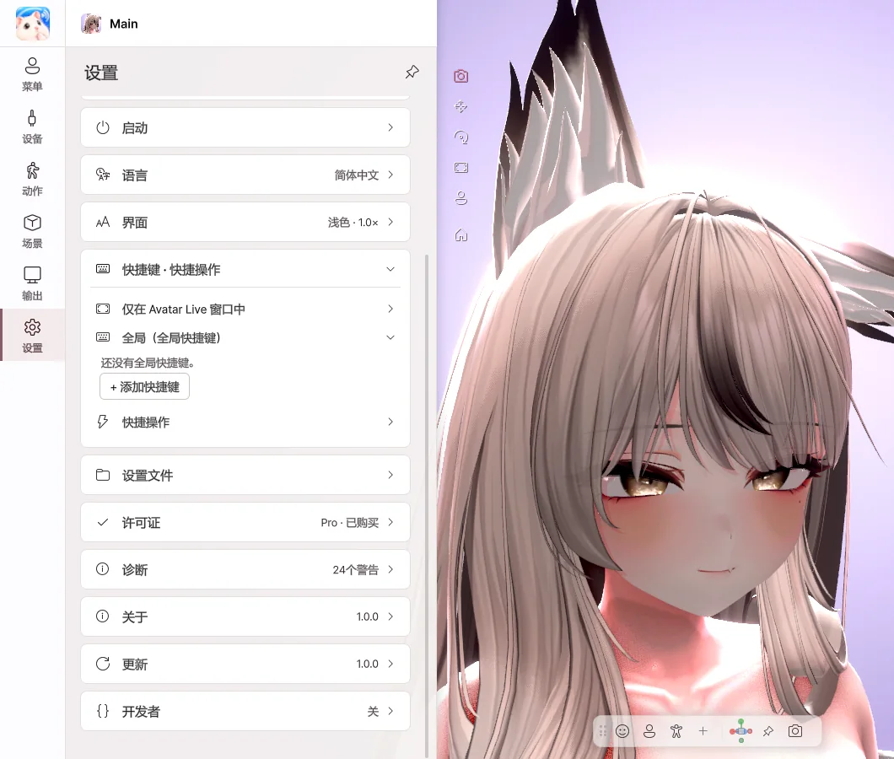

10. 设置
常规 · 窗口 · 性能

- 启动时打开菜单 — 关闭后，将不显示菜单直接启动。
- 窗口 — 设定窗口大小、全屏、窗口置顶以及 X 按钮的行为。
- 性能 — 设定帧率和画质。调低可减轻电脑负担。
- 阴影 — 头发和下巴投在颈部和胸部的阴影。关闭可减轻 GPU 负担。
- 语言 — 한국어 · English · 日本語 · 简体中文
- 界面 — 更改主题、面板位置和文字大小。
快捷键

- 点击 + 添加快捷键，然后选择动作和按键。
- 在游戏中或 Avatar Live 位于后台时也能使用。
- 其他程序的按键输入会照常传递。
- 菜单按钮和手势可以选择 按住时 或 按下切换。
许可证
查看当前版本。
| 按钮 | 作用 |
|---|---|
| 输入其他代码 | 切换到其他许可证。 |
| 升级到 Pro | 输入在 BOOTH 购买的升级，切换为 Pro。 |
| 立即确认 | 重新确认许可证。 |
诊断 · 关于 · 更新
| 项目 | 作用 |
|---|---|
| 诊断 › 发送错误报告 | 出现问题时发送说明和日志。仅在点击时发送。 |
| 关于 › 发送改进建议 | 发送希望增加的功能或希望改进的地方。 |
| 公告 | 新公告会在启动时显示一次，以往的公告可以在设置中再次查看。 |
| 打开日志文件夹 | 查看日志文件。 |
| 立即检查 · 下载 | 检查并下载新版本。 |
| 重新启动并安装 | 立即更新。角色和设置保持不变。 |
开启 设置 › 更新 › 自动检查并下载 后会自动下载更新，并在重新启动或退出时安装。如果因服务器原因下载较慢，请从 BOOTH 重新下载新版本使用。角色和设置会保留。
发送问题 · 建议
- 使用中遇到 错误或问题 时，请通过 设置 › 诊断 › 发送错误报告 告诉我们。写上一两句当时的情况，会对查找原因有很大帮助。
- 如果有 需要的功能或改进建议，请通过 设置 › 关于 › 发送改进建议 发送给我们。收到的意见会反映到更新计划中。